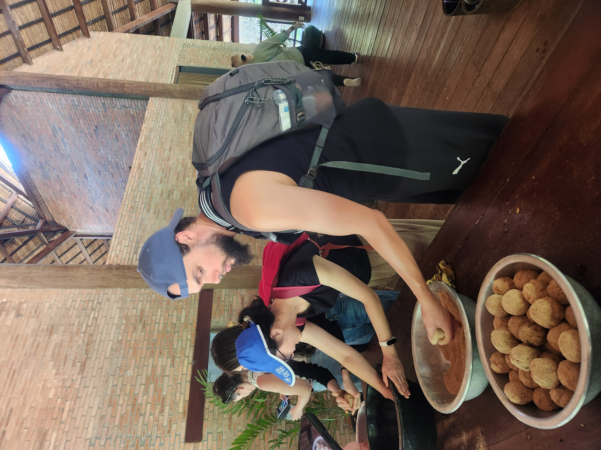
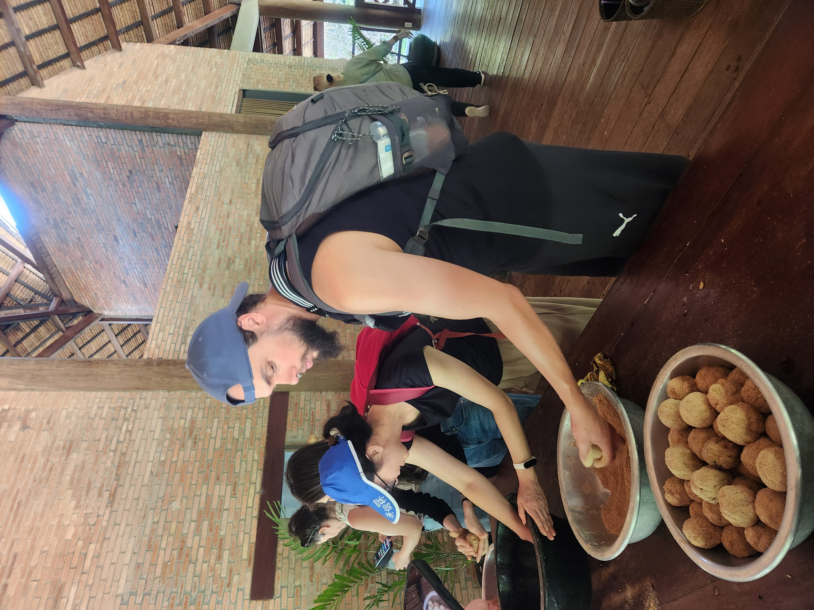
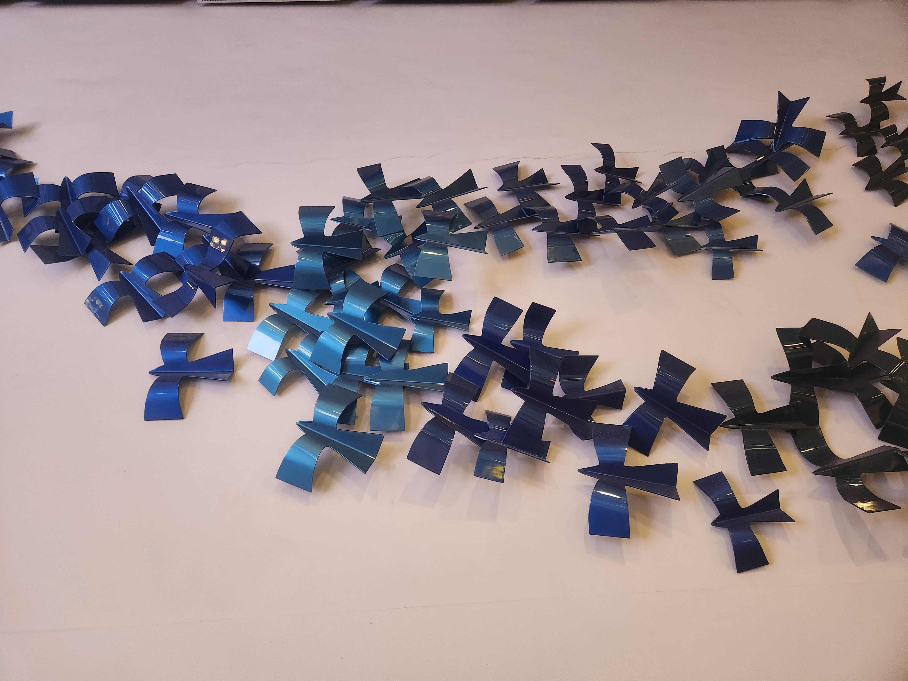
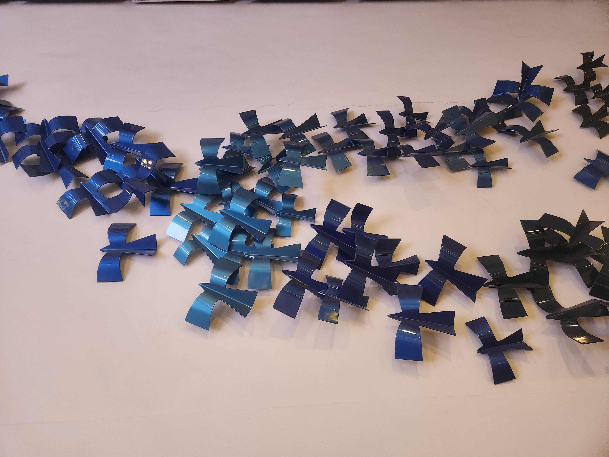

Cambodge 2024
Voyage du 25 novembre 2024 au 11 décembre 2024 Villes visitées - Siem Reap, Phnom Pehn, Sihanoukville, Koh Rong
Départ Lyon, levés 2h du matin, il est 6H lors du décolage, on est contents...
→ Direction Frankfürt
1 heure de vol


Départ Frankfürt
→ Direction Singapour
12H de vol


Départ Singapour après une petite heure d'escale (c'était la course !!!)
→ Direction Siem reap au cambodge
2H de vol


Notre ville préférée du voyage Siem Reap


La rue des pubs de Siem reap


Temple small tour with tuk tuk n°1


Temple mini tour with tuk tuk n°1


Temple big tour with tuk tuk n°2


Le grand retour à Angkor Wat tant attendu


Floatting village with tuk tuk n°1


Début de l'excursion avec un guide anglophone.
Découverte de la fabrication artisanale de produits alimentaires à base de sous produits du palmier.
Après un long trajet en voiture nous voici sur la montagne Kulen.
Parcours : 1000 lingas, bouddha couché


Suite du parcous à la montagen Kulen
La cascade où nous avons pu déjeuner avec le guide. Le chauffeur est resté à la voiture.


Meilleure partie de l'excursion : la découverte de la réserve des éléphants.
Les éléphants y sont libres et chaque éléphant a son 'Mahout' dédié
Le plus jeune des éléphants a la quarantaine, tandis que le plus vieux a 67 ans.


 



La capitale, Phnom Pehn et ses rues au rythme endiablé.


La palais royal à Phnom Pehn, ouvert toute la journée contrairement à ce que les conducteur de tuk tuk auraient aimé nous faire croire.


L'île de la soie Koh Dach. Découverte en autonomie en scooter.


L'île de Koh Rong atteinte après 3H de bus au départ de Phnom Pehn et un trajet en speedboat plutôt calme.


Les plages sur l'île de Koh Rong.


La chute d'eau dans la jungle de l'île de Koh Rong avec ses cigales tropicales qui émettent un son de scie circulaire.


Les petits chiens que nous avons pu rencontrer sur notre route.


La quête de la noix de coco !!!

Retour à Siem Reap après un bus de nuit de 6H pour louer un scotter et découvrir un derner temple.


Bantey srei, un temple dédié au dieu indou Shiva. 1h de route de Siem Reap.


Retour à Angkor Wat pour la troisième est dernière fois du voyage.


L'aéroport de Changi dans lequel nous avons passé 14H d'escale.


 



Un aperçu de la nourriture que nous avons pû croiser un peu partout : dans la rue, à l'hôtel, dans les restaurants.